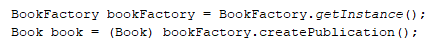

Factory Method
O Factory Method é um padrão que define uma interface para criar um objeto, mas permite às classes decidirem qual classe instanciar. O Factory Method permite a uma classe deferir a instanciação para subclasses.
No nosso projeto fizemos o uso do FactoryMethod da seguinte forma:
Criamos uma interface publicação (Publication):
Implementamos Publication na classe livro (Book):
Implementamos Publication na classe revista (Magazine):

Criamos uma interface fábrica de publicação (PublicationFactory):
Implementamos PublicationFactory na classe fábrica de livro (BookFactory):
Implementamos PublicationFactory na classe fábrica de revista (MagazineFactory):
Instanciação da classe livro (Book):

Instanciação da classe revista (Magazine):